Since February, Sunday Akullu has been out of work.
The Kampala-based social worker and mother of two children had been leading a USAID-funded program supporting orphans and vulnerable children who were either infected or affected by HIV. This project, implemented across various regions of Uganda, provided school fees, counseling, food, and interventions against violence for 15,000 children and caretakers from mainly low-income backgrounds.
Providing such holistic support helped disadvantaged children boost their general health and quality of life – which then helped them reduce the level of virus in their bodies, Akullu said. Lower viral load is associated with reduced morbidity and transmission of HIV.
All these programs were shuttered in February, when the Trump administration issued a freeze on foreign aid. They have now been indefinitely closed.
“Currently we don't know the state [the children] are in, because we are not able to do home visits,” said Akullo, a social worker with Reach Out Mbuya Community Health Initiative (ROM), an HIV/AIDS NGO based in Kampala.
“There were children with high viral load non-suppressors, when the virus is a lot in the blood. Maybe there are reasons they are not taking their medication well. So such children were being given food on a quarterly basis even to boost their immunity. That support was also totally cut off. So currently, we don't know who is trying to help them,” she said.
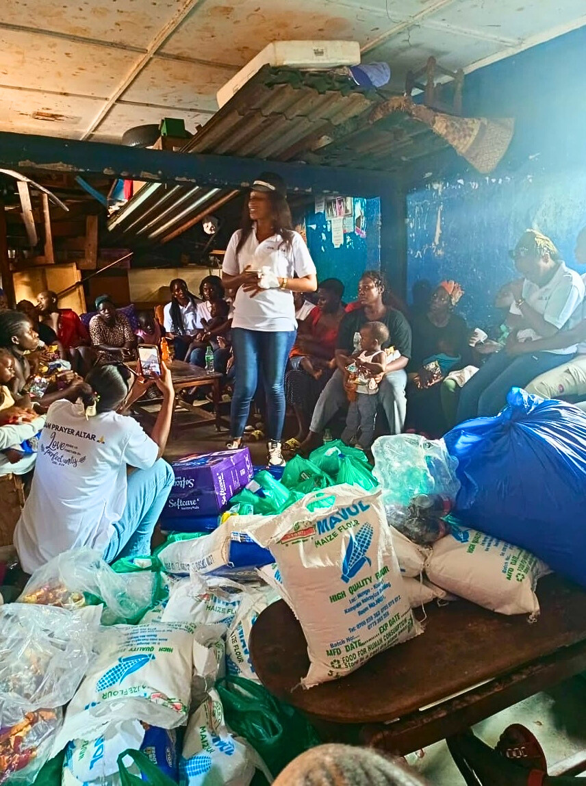
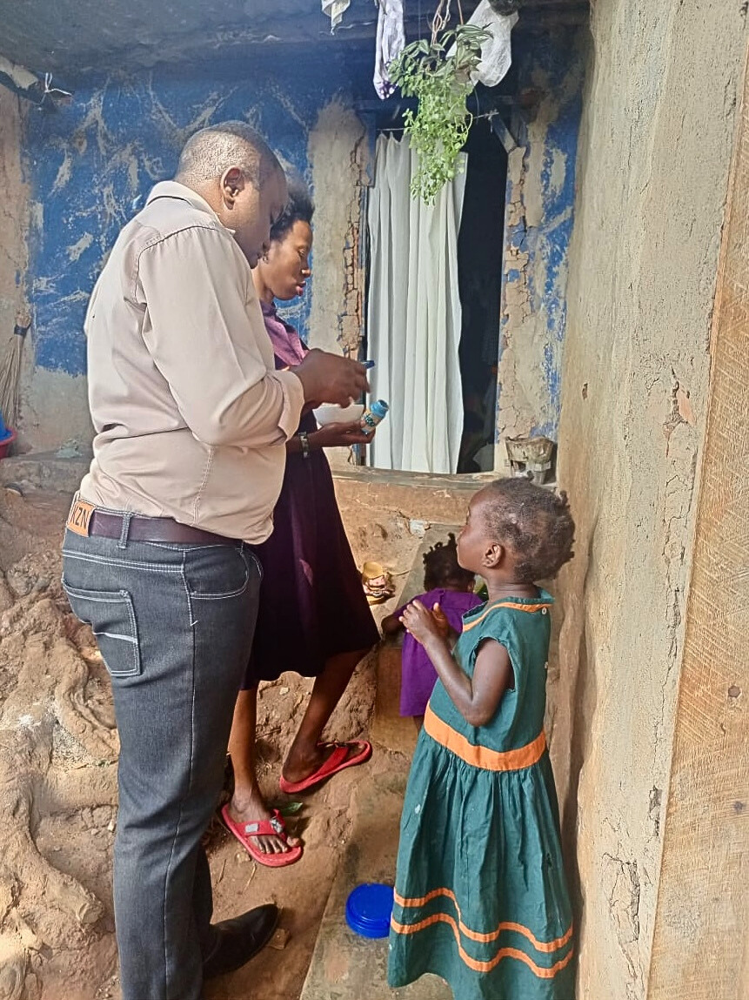
ROM provides food aid to HIV-affected children and their caretakers in Kampala in January.
The dismantling of the U.S. Agency for International Development (USAID) and uncertainty around future American funding for the global HIV/AIDS response is taking a major toll in Uganda, where HIV support has contracted nationwide, affecting those most vulnerable.
In February, the incoming Trump Administration ceased all HIV funding to Uganda for two weeks as part of the administration’s initial aid freeze, putting an immediate halt on most HIV services in the country. Although some services like the provision of HIV drugs have since resumed under the State Department’s waiver for lifesaving aid, the international development agency’s closure and anti-DEI - diversity, equity and inclusion - policies have effectively curtailed all HIV services in Uganda, where over five percent of the population lives with HIV, a lifelong disease.
“The stopping of those programs had an immediate and instant effect,” said Ofwono Opondo, a monitoring and evaluation officer with ROM, which currently manages the U.S.-funded HIV response project across Uganda’s central region.
“The people who were supposed to get their refills within the two weeks, they missed their refills. And many of them did not have drugs for the two weeks. Now those who had, they started skipping medicine so that they could keep it for long. As we talk now, there are quite a number of people who are having high viral load because they had skipped some days,” Opondo said, who has worked in the HIV sector for 14 years.
Despite the partial resumption of services, things are far from normal. In almost half of the country where USAID leads in funding antiretroviral treatment, the crippled aid agency has shuttered HIV clinics at two-thirds of government-run health centers, forcing people to travel long distances to seek an increasingly limited supply of medicine at the remaining centers. Sometimes drugs aren’t available, and patients end up sleeping in the clinics, Opondo said.
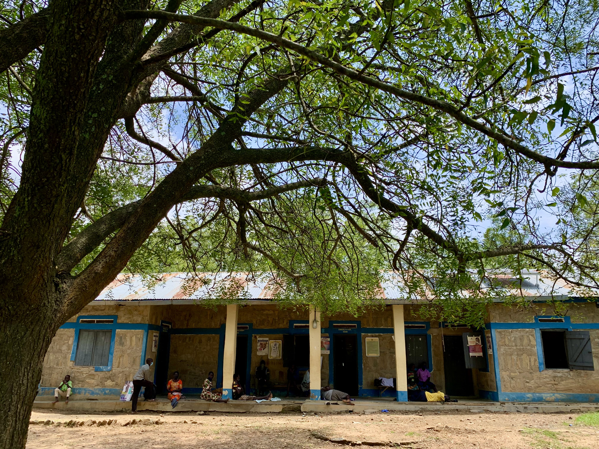

A government-run Health Center 2 in Moyo, northern Uganda. Now, only Health Center 4s provide HIV care.
The U.S. funds about 60 percent of Uganda’s HIV/AIDS budget, with recent annual estimates around $400-500 billion. Funding is channeled through three agencies: the now largely crippled USAID, the Centers for Disease Control and Prevention (CDC), and the Department of Defense (DOD). Each agency funds HIV care and treatment services in specific regions of the country, with some USAID-funded programs overlapping in CDC and DOD-funded areas. USAID’s funding for treatment is mainly centered in northern, eastern and southwestern Uganda, which are home to large rural and low-income populations.
In the last quarter before the Trump Administration came to power, USAID supplied funding for about 40 percent of Uganda’s core care and treatment services for people living with HIV, according to data from October-December 2024 filed on an internal HIV reporting system managed by the Uganda and U.S. governments. That money enabled over 550,000 patients to access antiretroviral (ARV) services, the daily medication people with HIV take to suppress the virus. Without it, HIV multiplies in their blood and eventually becomes AIDS, where it effectively destroys their immune systems, leading to death.
Analysis of this data shows that subcounties with antiretroviral funding from USAID, in comparison to subcounties funded by the other U.S. agencies, were already associated with a higher percentage of the population that accesses HIV treatment. This reveals that USAID tends to support areas that have fewer HIV clinics, where people from outside the subcounties must travel to access treatment. It’s these same areas where the majority of HIV clinics have now closed, increasing the burden on the few remaining centers still providing services.
“There are areas now where people have to cross districts from one district to another to go and access the services. There’s always serious congestion at facilities. There's a facility where I went where people were sharing medicine - they opened one bottle for four or five people. And there’s another facility I went to where there were no available drugs for [patients'] regimens, so people were given a different regimen. And that is very dangerous, because you can become resistant to both regimens,” Opondo said.
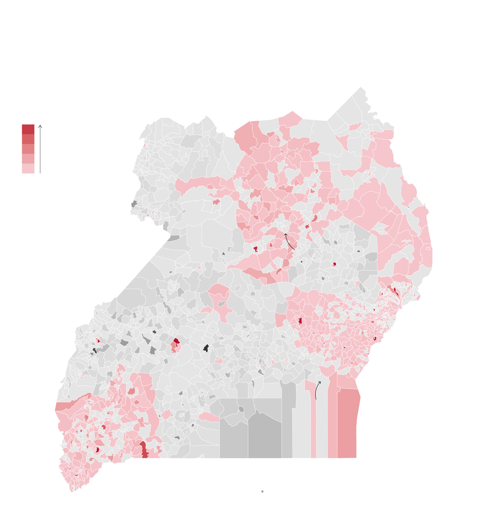
USAID supported many parts of rural Uganda that already had
fewer HIV clinics. Now, two thirds of those clinics have closed.
Percentage of Uganda subcounties given antiretroviral drugs funded by USAID from October-December 2024
Gray areas are funded by CDC or DOD.
Crowdedness - more
people travel to the
clinic from nearby
subcounties
Lira, where HIV prevalence
was 12% in 2023
Jinja, where HIV infections are
rising, especially among girls
Graphic by Annika McGinnis
Source: Partner In-Country Reporting System (PIRS)
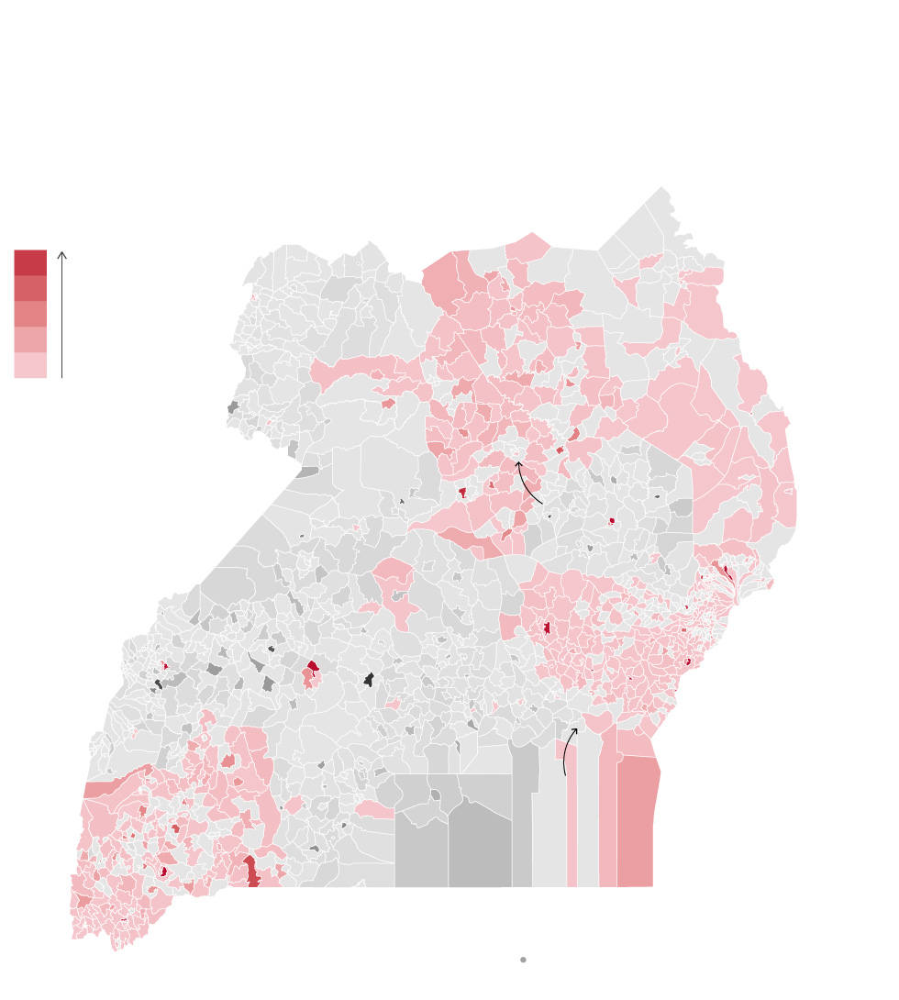
USAID supported many parts of rural Uganda that
already had fewer HIV clinics. Now, 2/3 have closed.
Percentage of Uganda subcounties given ARV drugs funded by USAID from Oct.-Dec. 2024.
Gray areas are funded by CDC and DOD.
Crowdedness:
More people travel
to the clinic from
nearby areas
Lira, where HIV prevalence
was 12% in 2023
Jinja, where HIV infections are
rising, especially among girls
Graphic by Annika McGinnis
Source: Partner In-Country Reporting System (PIRS)
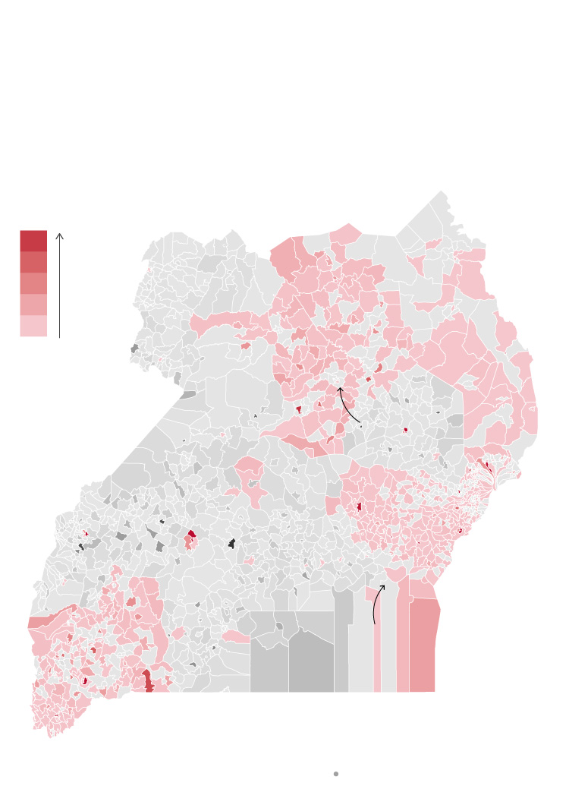
USAID supported many parts of rural
Uganda that already had fewer HIV
clinics. Now, 2/3 have closed.
% of subcounties given ARV drugs funded by USAID from Oct.-Dec. 2024
Crowdedness:
More people travel
to the clinic from
nearby areas
Lira, where HIV prevalence
was 12% in 2023
Jinja, where HIV infections are
rising, especially among girls
Graphic by Annika McGinnis
Source: Partner In-Country Reporting System (PIRS)
A letter from USAID to Uganda’s Ministry of Finance on April 28 further announced the termination of programs strengthening health systems at seven major regional hospitals in major cities across western, northern and eastern Uganda.
The program had hired dozens of staff including epidemiologists and infection prevention and control officers, conducted training to improve HIV service delivery and data collection, and launched platforms to track HIV drug resistance. Last week’s directive ordered the programs to immediately halt spending and shut down completely by May 28.
USAID support targeted groups most at risk to contract and spread HIV
In 2004, Uganda was included in the first group of countries that received U.S. funds for HIV/AIDS under the President's Emergency Plan for AIDS Relief (PEPFAR), a largely popular bipartisan initiative started under former President George W. Bush, a Republican. At that time, Uganda was reeling from two decades of a deadly AIDS epidemic that had killed over 800,000 people and orphaned more than two million children.
While a national HIV prevention strategy helped slow the spread, PEPFAR enabled Uganda to dramatically expand the free provision of ARV drugs, develop its medical systems, and open community-led clinics that target the communities most at risk of catching and spreading the virus. National prevalence rates declined from about 18-30 percent at the height of the epidemic to just 5 percent in recent years. In 2022, the CDC estimated that PEPFAR had saved about 600,000 lives in Uganda.
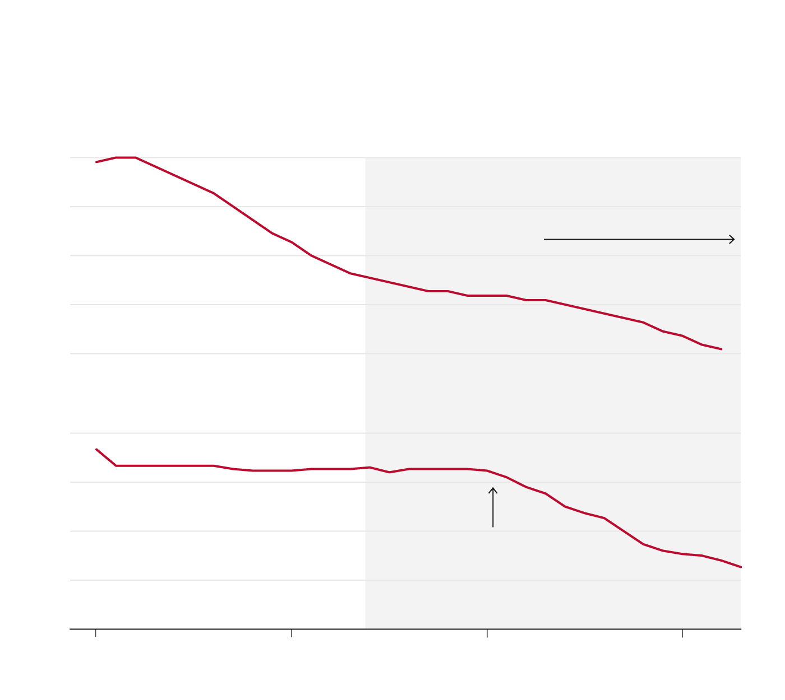
Twenty years of PEPFAR coincided with sustained drops
in HIV rate and new infections in Uganda
Percent of the Uganda population ages 15-49 with HIV, and number of new infections annually
U.S. funding to curb HIV in Uganda
New infections - mainly in
vulnerable populations - have
been harder to curb, but have
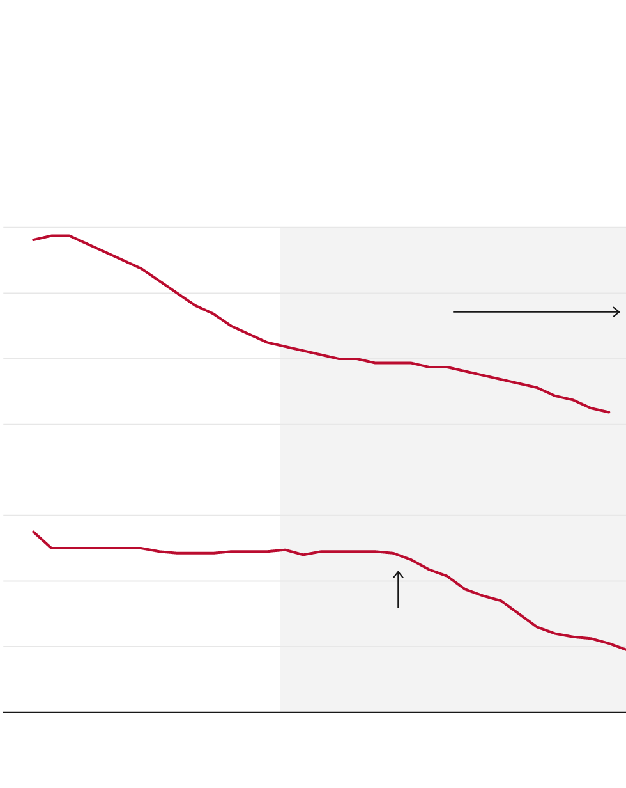
Twenty years of PEPFAR coincided with
sustained drops in HIV rate and new
Percent of the Uganda population ages 15-49 with HIV, and number of new
U.S. funding to curb HIV in Uganda
New infections - mainly in
have been harder to curb,
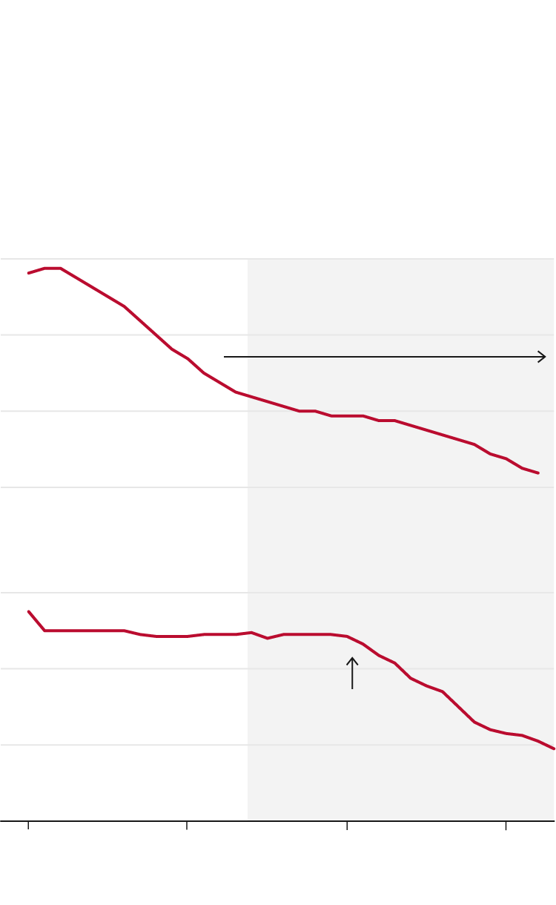
Twenty years of PEPFAR coincided
with sustained drops in HIV rate
and new infections in Uganda
Percent of the Uganda population ages 15-49 with HIV, and
number of new infections annually
To curb new infections of any disease, interventions must target the groups most likely to contract and transmit it. Before its dismantling, USAID led in funding programs that targeted communities with consistently higher levels of HIV, including fisherfolk and other mobile populations, sex workers, drug users, gay men and transgender people.
Many people within these populations used to access care through specialty HIV clinics in government-run health centers and mobile pop-up services that would seek them out in their own communities. Some of these centers became safe havens as Uganda’s draconian Anti-Homosexuality Act of 2023 increased the stigma and danger faced by individuals identifying as LGBT.
But under new rules of U.S. aid, government health centers are no longer allowed to identify people with HIV by their sub-groups, or to operate separate HIV clinics with specialty HIV doctors and private services. Instead, HIV patients must seek treatment through general outpatient departments among people seeking medical care for any other ailment. “There are no special doctors for them; there are no peers for them. The stigma has increased. Some of them are running to NGOs,” Opondo said.
USAID has also funded a majority of services for drug users, including people who inject drugs. This included a “safe syringe” program that distributes syringes that automatically lock to prevent use by another person, according to Opondo.
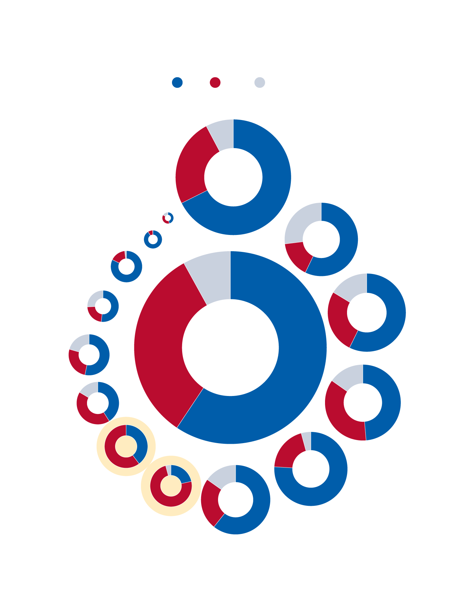
USAID drops HIV prevention services for those most-at-risk.
Of all U.S. agencies under PEPFAR, USAID funds the majority of prevention services for drug users.
Clients of
sex workers:
30,000 people
Sex Workers:
90,000 people
Drug users
(non-injecting)
Source: Partner In-Country Reporting System (PIRS)
Graphic by Annika McGinnis
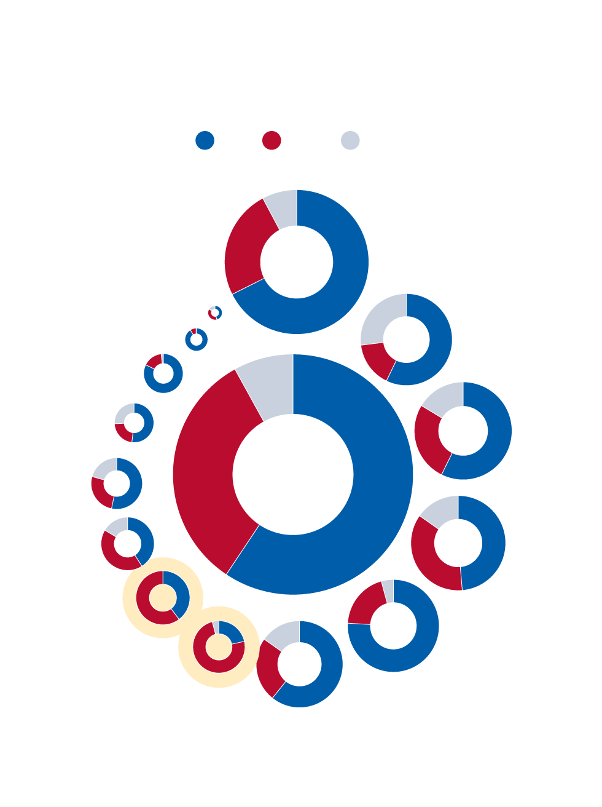
USAID drops HIV prevention services for
the most-at-risk communities.
Of all U.S. agencies, USAID funds the majority of services for drug users.
Clients of
sex workers:
30,000 people
Drug users
(non-injecting)
Source: Partner In-Country Reporting System (PIRS)
Graphic by Annika McGinnis
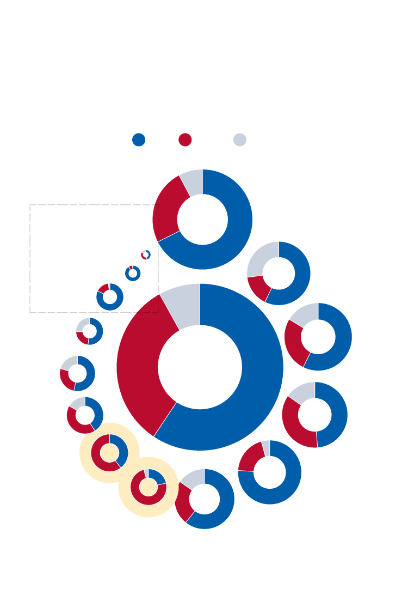
USAID drops HIV prevention
services for those most-at-risk.
Of all U.S. agencies under PEPFAR, USAID funds
the majority of services for drug users.
Clients of
sex workers:
30,000 people
Incarcerated: 37
Refugees
Drug users
(non-injecting)
Source: Partner In-Country Reporting System
Graphic by Annika McGinnis
USAID was also key in PEPFAR’s efforts to prevent the spread of HIV, supporting distribution of condoms, community education campaigns, and supplies of medicine that prevents individuals from contracting the virus before and after exposure, according to the data downloaded from a PEPFAR reporting system.
Analysis of this data shows that in comparison to subcounties with prevention services funded by the CDC or DOD, subcounties funded by USAID were also more likely to reach a higher percentage of the subcounties’ populations with prevention services. This, again, could show USAID’s targeting of areas that already had fewer HIV clinics that provided these services - which now have even fewer.
Opondo said HIV monitoring teams expect to see a rise in HIV cases transmitted from mothers to their babies because the mothers’ blood level of HIV, their so-called viral load, will be higher.
“And for the mothers who have to go long distances to a Health Center 4, they will start giving birth at home or from these village health attendants, who may not even know about HIV. So we expect a rise in mother-to-child transmission,” he said.
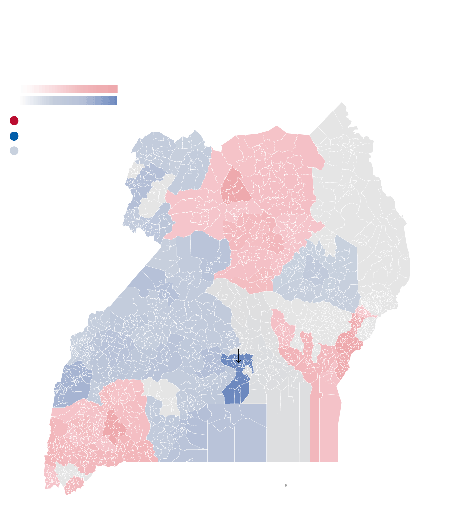
USAID supplies HIV prevention medicine to major rural areas in
northern, eastern and southwestern Uganda
Number of people given pre-exposure prophylaxis to prevent HIV from October-December 2024
Graphic by Annika McGinnis
Source: Partner In-Country Reporting System (PIRS)
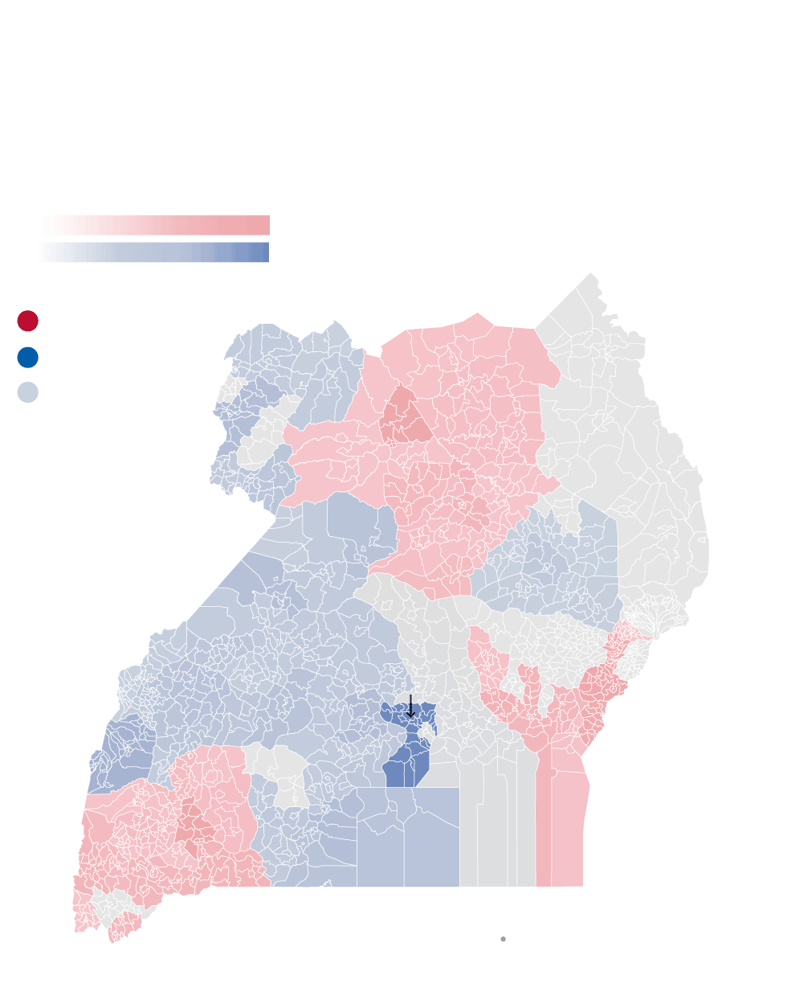
USAID supplies PREP to major rural areas in
northern, eastern and southwestern Uganda
Number of people given pre-exposure prophylaxis to prevent HIV
from October-December 2024
Graphic by Annika McGinnis
Source: Partner In-Country Reporting System (PIRS)
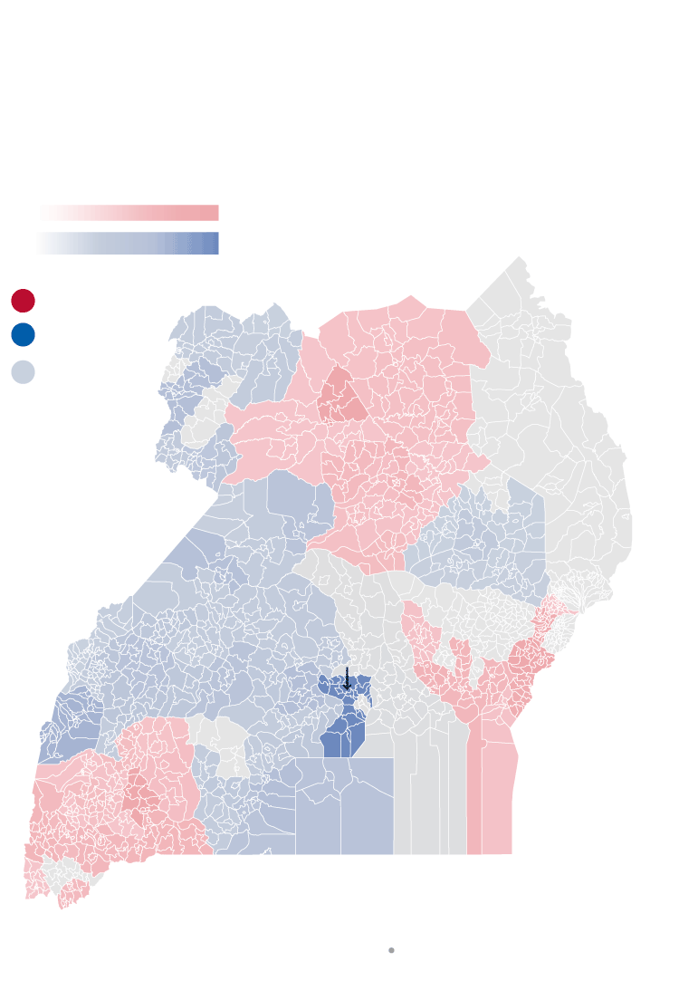
USAID supplies PREP to rural areas in
Uganda’s north, east and southwest
Number of people given pre-exposure prophylaxis to prevent HIV
from October-December 2024
Graphic by Annika McGinnis
Source: Partner In-Country Reporting System (PIRS)
Faced with the sudden loss of resources, the Uganda government’s only significant response has been to start absorbing HIV treatment into the country’s general health systems. Staff employed by CDC-funded projects are currently training health providers at government-run centers in HIV care, treatment and data collection, according to a staff member who asked for anonymity due to concern for their job security.
But no major domestic financing has been allocated to fill the gaps in research, prevention, support for most-at-risk populations, or holistic support for vulnerable groups such as children. Staff members who were laid off have not been rehired.
Akullu said HIV providers were disappointed with the government’s response. “Our government is quiet. They are not saying anything,” she said. Akullu, who is her family’s breadwinner, worries about how she will continue to feed and pay school fees for her children without an income.
Despite the uncertainty, Opondo said his team is encouraging patients to continue adhering to their daily medications. He is also advising patients to start additional businesses so that they might be able to start purchasing their lifetime supply of drugs in case they are no longer provided for free.
Everyone is scared, he said.
“People are not sure what’s going to happen. People are not sure at all. And the moment people are not sure what's going to happen in the future, they start planning otherwise," Opondo said. "Now, these days, some clients are resorting to herbal medicine, any medicine people bring on board. They are not sure of the future, and they are worried.”
Methodology
For this story, I conducted analysis on datasets downloaded from the Uganda Partner-in-Country Reporting System, a national-level HIV data system funded by PEPFAR and managed by PEPFAR implementing partners. The data was provided by a staff member who asked for anonymity to protect their job.
The data was available for each clinic reached by various PEPFAR-funded interventions for the quarter October-December, 2024: the final quarter of data reporting before the Trump administration assumed office. Separate datasets were provided for general antiretroviral services, services for the Priority Populations, and PREP services. I divided clinics into subcounties to aggregate subcounty-level data. I then merged in population data from the Uganda 2014 census available on the Uganda Board of Statistics on a subcounty level (available in the regional parish-level datasets). Because some subcounties had changed names, I manually merged in the populations for about a third of the data (over 700 subcounties)
Since the more recent 2024 census data is not yet public at a subcounty level, but the overall report shows the population expanded by about 3% since 2014, I increased the 2014 subcounty population data by 3%. This is not meant to be a precise measurement but provides an estimate of the population differences between subcounties. Dividing the total number of people accessing antiretroviral (ART) services in a subcounty by these population estimates, I was able to determine the approximate percentage of each subcounty reached by ART services. As explained in the story, I did not interpret this as the actual percentage of the subcounty population that accessed HIV medication, because people frequently travel to neighboring subcounties to access HIV care. However, upon consultation with a staff member who works with this data, I interpreted the subcounties with higher percentages as areas where neighboring subcounties had fewer HIV clinics, making people travel to these subcounties for care.
I conducted statistical regressions in R to analyze the associations between the subcounties with higher percentages of ART and subcounties funded by USAID, CDC (Centers for Disease Control and Prevention) and DOD (Department of Defense). I also conducted regressions between the percentage of the subcounty population reached by prevention services and the three U.S. funding agencies. The presence of USAID was statistically significant with a positive coefficient with both increased percentage of ART and total number of people reached by prevention services, whereas the presence of CDC and DOD were not statistically significant with either variable.
I also sourced data on historical HIV and new infection rates in Uganda from UNAIDS. This data was published on the World Bank data platform and the Aidsinfo data map run by UNAIDS, UNICEF and the World Health Organization.
Subcounty shapefiles were available for 2020 and downloaded from the Humanitarian Data Exchange, sourced from Uganda Bureau of Statistics.